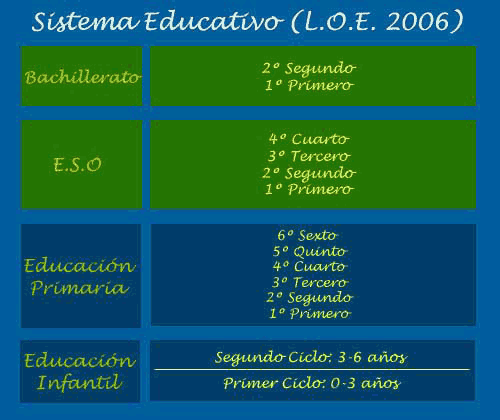

Colegios de Zaragoza

Colegios Privados
de Zaragoza

Colegios Concertados
de Zaragoza

Calendario Escolar

Listado de Colegios
"Colegios de Zaragoza" - Los mejores colegios en Zaragoza.
El resumen "Colegios en Zaragoza" ha sido realizado con el objetivo de evaluar y difundir la popularidad de los distintos colegios a los que acuden nuestros hijos. Además del listado de colegios por categoría, incluimos es calendario escolar de Zaragoza.En la clasificación de este año, ha incrementado su popularidad el colegio Jesús María El Salvadorde forma destacada.
Acerca de los Colegios de Zaragoza
Actualización: 18/08/2014
No pretende ser una lista exhaustiva, sino una guía que permitar mostrar la popularidad de los centros más destacados de la provincia de Zaragoza. La lista de colegios de Zaragoza del año 2010 incluirá otros aspectos aportados por los propios padres y alumnos, que realmente conocen y sufren las virtudes y defectos de los diferentes centros.
El objetivo es generar una lista fiable que nos permita estimar el nivel de la educación en nuestra región madiante una serie de parámetros definidos y marcados por la popularidad online.
La lista "Colegios en Zaragoza", que integra una agrupación de los mejores colegios de Zaragoza es la siguiente:
- Colegio Jesús María El Salvador
- El Colegio Jesús María El Salvador es un centro concertado que ofrece enseñanzas de Infantil, Primaria y Educación Secundaria Obligatoria en el modelo de educación concertada. Bachillerato es totalmente privado.
- DIRECCIÓN: Cl. Cardenal Gomá, 13. 50.009 (ZARAGOZA).
- Teléfono: 976 35 34 00
- Es de los colegios más populares de Zaragoza desde hace ya bastante tiempo, y sigue creciendo en popularidad.
- Colegio Jesús María El Salvador (Zaragoza)
- Colegio Marista El Pilar
- El Colegio Marista El Pilar es un centro concertado que ofrece enseñanzas de Infantil, Primaria, Educación Secundaria Obligatoria y Bachillerato. Todos los niveles son ofrecidos mediante el sistema de enseñanza concertada excepto el nivel de Bachillerato, que es ofertada de forma totalmente privada.
- DIRECCIÓN: Cl. Rafael Alberti, 5. 50.018. Zaragoza
- Teléfono: 976 51 96 55
- Buenas instalaciones, buena educación, buenos resultados. Se gana una posición dentro del grupo de mejores colegios de Zaragoza
-
Colegio Marista El Pilar (Zaragoza)
- Colegio San Agustín
- El Colegio San Agustín es un centro privado concertado que ofrece Infantil, Primaria, E.S.O y Bachillerato. Al igual que el caso anterior, todos los niveles son ofrecidos mediante el sistema de enseñanza concertada excepto el nivel de Bachillerato, que es ofertada de forma totalmente privada.
- DIRECCIÓN: Camino De Las Torres, 79-89. 50.008(Zaragoza)
- Teléfono: 976 22 48 44
- Colegio de muy buen nivel que ofrece toda la amplia variedad educativa, desde infantil hasta bachillerato. Destaca la apuesta decidida por el fomento de los idiomas
-
Colegio San Agustín(Zaragoza)
- Colegio Juan de Lanuza
- El Colegio Juan de Lanuza es un centro privado no concertado laico y mixto, que ofrece Infantil, Primaria, E.S.O y Bachillerato
- DIRECCIÓN: Ctra. Nacional, 125. Km.7. 50.011 (Zaragoza)
- Teléfono: 976 30 03 36
- Es el único centro privado no concertados que se ha situado entre los mejores colegios de Zaragoza este año en popularidad.
-
Colegio Juan de Lanuza (Zaragoza)
- Colegio Compañía de María
- El Colegio Compañía de María es un centro privado concertado que ofrece Infantil, primaria y E.S.O. El nivel de Bachillerato es privado.
- DIRECCIÓN: C/ Bilbao, 10. 50.004 (Zaragoza)
- Teléfono: 976 22 18 63
- Buenas instalaciones con un nivel de eseñanza alto. Nueva incorporación a la lista de Mejores Colegios de Zaragoza
-
Colegio Compañía de María (Zaragoza)
Ésta es la lista colegios más populares de Zaragoza durante el año 2009. En 2.010, se incluirán nuevos encuestas para optimizar y mejorar el ranking. El objetivos es separar según la titularidad de cada colegio y obtener dos clasificaciones más: la primera, con el nombre "los mejores Colegios privados de Zaragoza" y la segunda,con el nombre "los mejores Colegios concertados de Zaragoza". Esta misma operación será repetida para los Colegios públicos de Zaragoza
Modelo educativo vigente
El actual sistema educativo vigente en España divide la enseñanza en 3 etapas principales: Educación infantil, Educación Primaria y Educación Secundaria. Esta última fue desglosada en dos, según la obligatoriedad de cada etapa. Así, obtenemos Educación Secundaria Obligatoria (E.S.O.) y Bachillerato. El siguiente esquema clasifica de forma resumida el modelo educativo vigente en la actualidad

Nota: es necesario aclarar que la lista de mejores colegios de Zaragoza no es oficial ni dependiente de ningún organismo público, y deriva del trabajo de recopilación de datos de diversas fuentes de información disponibles en distintos medios. Cualquier opinión o comentario será tenido en cuenta. Dirección de correo electrónico: Colegios de Zaragoza.
Aquí teneis unas recomendaciones de webs que os pueden resultar interesantes: Calcular el IBAN va a ser necesario en poco tiempo, informate sobre como hacerlo de forma sencilla en Calcular IBAN. Si quieres conocer todo lo referente al Despido objetivo, lo puedes consultar de forma rápida y clara en Despido objetivo.